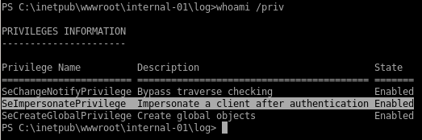

juicy potato
it's always a good idea to start priv-esc enumeration on a windows machine with whoami /priv to see what kind of privileges our victim has
the victim is vulnerable to the juicy potato exploit because the SeImpersonatePrivilege state is enabled
lets copy another powershelltcp over and change the port it will call back to

next lets create a batch script locally that will have JP download our powershell script and call a reverse shell back to us

now lets copy juicy potato to our bart directory or download it here